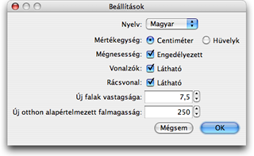

A beállítások módosításához válassza a Sweet Home 3D > Beállítások... menüpontot Mac OS X-en, vagy a Fájl > Beállítások... menüpontot egyéb rendszerek alatt.

A Beállítások ablakban tudja kiválasztani a program során használt Nyelvet és az alapértelmezett Mértékegységet amivel a program a távolságokat és a szélességeket méri.
A Mágnesesség jelölõnégyzet engedélyezi vagy tiltja le a mágnesességet az Alaprajz nézetben falrajzolás és bútor elhelyezés közben.
A Vonalzók jelölõnégyzettel lehet a vonalzók láthatóságát ki- és bekapcsolni.
A Rácsvonal jelölõnégyzet segítségével lehet az Alaprajz rácsozottságát ki- vagy bekapcsolni.
Az Új falak vastagsága érték adja meg az összes új fal kezdeti vastagságát.
Az Új otthon alapértelmezett falvastagság érték adja meg az új otthok összes falának magasságát.
|